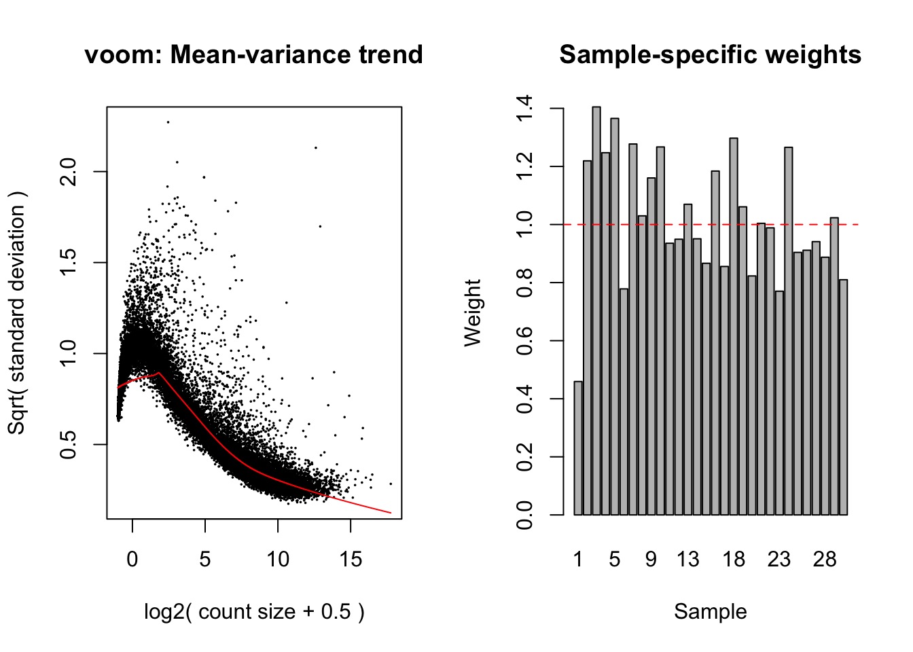
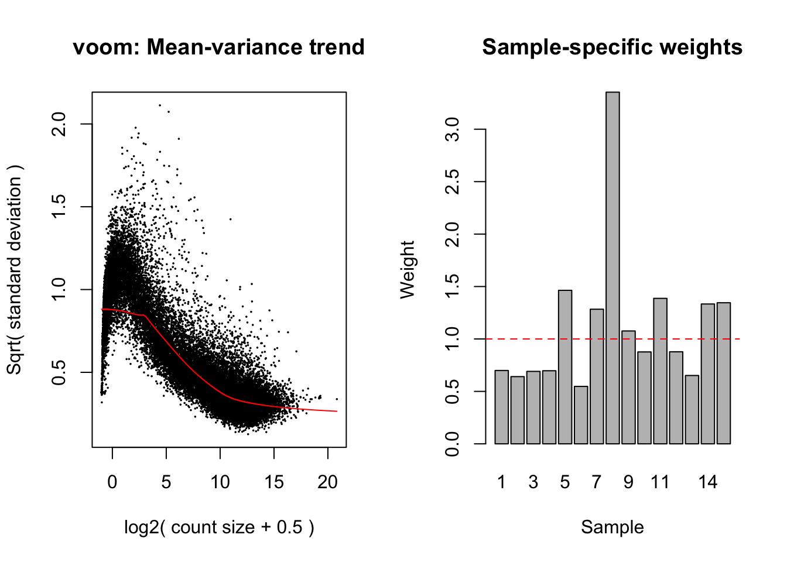
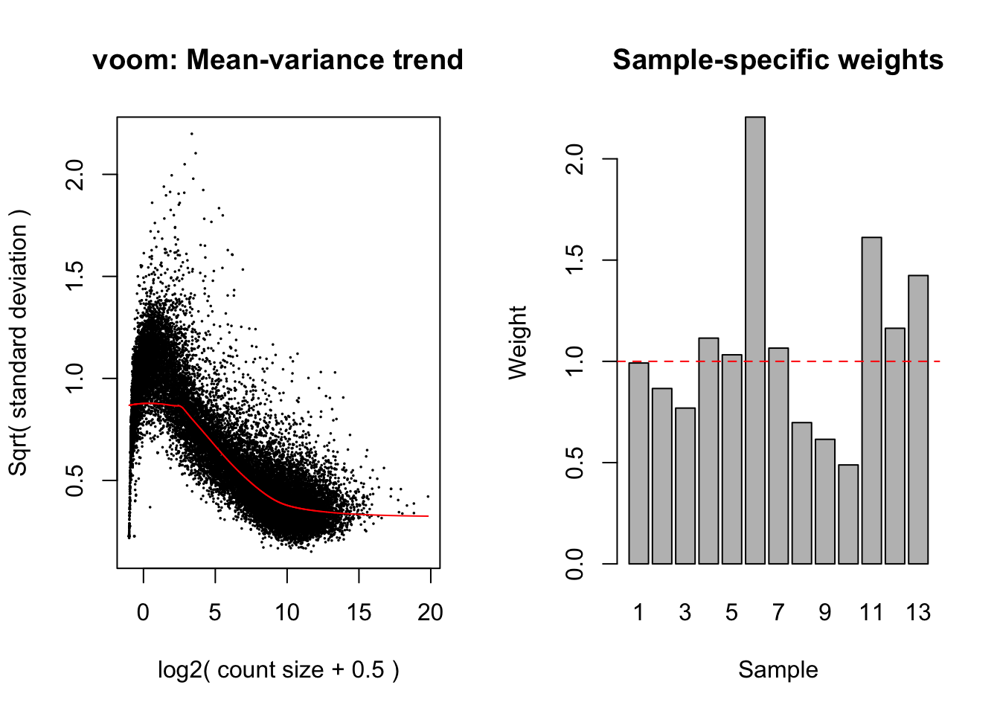

Last updated: 2020-05-19
Checks: 6 1
Knit directory: mousevsfish/
This reproducible R Markdown analysis was created with workflowr (version 1.6.2). The Checks tab describes the reproducibility checks that were applied when the results were created. The Past versions tab lists the development history.
The R Markdown is untracked by Git. To know which version of the R Markdown file created these results, you’ll want to first commit it to the Git repo. If you’re still working on the analysis, you can ignore this warning. When you’re finished, you can run wflow_publish to commit the R Markdown file and build the HTML.
Great job! The global environment was empty. Objects defined in the global environment can affect the analysis in your R Markdown file in unknown ways. For reproduciblity it’s best to always run the code in an empty environment.
The command set.seed(20200504) was run prior to running the code in the R Markdown file. Setting a seed ensures that any results that rely on randomness, e.g. subsampling or permutations, are reproducible.
Great job! Recording the operating system, R version, and package versions is critical for reproducibility.
Nice! There were no cached chunks for this analysis, so you can be confident that you successfully produced the results during this run.
Great job! Using relative paths to the files within your workflowr project makes it easier to run your code on other machines.
Great! You are using Git for version control. Tracking code development and connecting the code version to the results is critical for reproducibility.
The results in this page were generated with repository version 726fdf7. See the Past versions tab to see a history of the changes made to the R Markdown and HTML files.
Note that you need to be careful to ensure that all relevant files for the analysis have been committed to Git prior to generating the results (you can use wflow_publish or wflow_git_commit). workflowr only checks the R Markdown file, but you know if there are other scripts or data files that it depends on. Below is the status of the Git repository when the results were generated:
Ignored files:
Ignored: .Rhistory
Ignored: .Rproj.user/
Ignored: data/.DS_Store
Ignored: data/de/
Ignored: data/enrichment/
Untracked files:
Untracked: analysis/gsea.Rmd
Untracked: analysis/import-kallisto-1.Rmd
Untracked: analysis/import-kallisto-2.Rmd
Untracked: analysis/import-kallisto-3.Rmd
Untracked: analysis/import-kallisto-data.Rmd
Untracked: analysis/preprocess_mouse_data.Rmd
Untracked: analysis/projectTest.Rmd
Untracked: code/combinedGSEA.R
Untracked: data/datasets/
Untracked: data/genesets/
Untracked: installed_old.rda
Untracked: ~$notes.docx
Unstaged changes:
Modified: analysis/import-data.Rmd
Note that any generated files, e.g. HTML, png, CSS, etc., are not included in this status report because it is ok for generated content to have uncommitted changes.
There are no past versions. Publish this analysis with wflow_publish() to start tracking its development.
# Dataset 1
dge_GSE97113 <- readRDS(here("data", "datasets", "mouse",
"GSE97113", "dge.rds"))
dge_GSE97113$samples %<>%
mutate(group = paste0("mths", age, "_", genotype)) Loading required package: edgeR# Dataset 2
dge_GSE140286 <- readRDS(here("data", "datasets", "mouse",
"GSE140286", "dge.rds"))
dge_GSE140286$samples %<>%
mutate(group = paste0("mths", age, "_", genotype))
# Dataset 3
dge_GSE142633 <- readRDS(here("data", "datasets", "mouse",
"GSE142633", "dge.rds"))
dge_GSE142633$samples %<>%
mutate(group = paste0("mths", age, "_", genotype))GSE97113:design_1 <- model.matrix(~0 + group + sex, data = dge_GSE97113$samples) %>%
set_colnames(gsub(pattern = "group", replacement = "", x = colnames(.)))
voomData_1 <- voomWithQualityWeights(dge_GSE97113, design = design_1, plot = TRUE)
contrasts_1 <- makeContrasts(
levels = colnames(design_1),
# Effect of aging in 5XFAD mice
mutantAging_4mth_vs_2mth = mths4_5XFAD - mths2_5XFAD,
mutantAging_4mth_vs_1mth = mths4_5XFAD - mths1_5XFAD,
mutantAging_2mth_vs_1mth = mths2_5XFAD - mths1_5XFAD
)
fit_1 <- lmFit(voomData_1, design_1) %>%
contrasts.fit(contrasts_1) %>%
eBayes(robust = TRUE)
results_1 <- decideTests(fit_1,
p.value = 0.05,
adjust.method = "fdr",
method = "global") # Adjust pvalues across all contrasts
# Number of DE genes in each comparison (contrast):
summary(results_1) mutantAging_4mth_vs_2mth mutantAging_4mth_vs_1mth
Down 578 1653
NotSig 24747 22861
Up 927 1738
mutantAging_2mth_vs_1mth
Down 943
NotSig 24599
Up 710# Quick overlap
vennCounts(results_1) mutantAging_4mth_vs_2mth mutantAging_4mth_vs_1mth mutantAging_2mth_vs_1mth
1 0 0 0
2 0 0 1
3 0 1 0
4 0 1 1
5 1 0 0
6 1 0 1
7 1 1 0
8 1 1 1
Counts
1 21972
2 450
3 1363
4 962
5 372
6 67
7 892
8 174
attr(,"class")
[1] "VennCounts"write_fit_1 <- write_fit(fit_1,
results_1,
method = "global",
adjust = "fdr")Notes:
GSE140286:design_2 <- model.matrix(~0 + group + sex, data = dge_GSE140286$samples) %>%
set_colnames(gsub(pattern = "group", replacement = "", x = colnames(.)))
voomData_2 <- voomWithQualityWeights(dge_GSE140286, design = design_2, plot = TRUE)
contrasts_2 <- makeContrasts(
levels = colnames(design_2),
#Effect of 5XFAD genotype (age constant)
effectOf5XFAD_12mth = mths12_5XFAD - mths12_WT,
effectOf5XFAD_6mth = mths6_5XFAD - mths6_WT,
effectOf5XFAD_3mth = mths3_5XFAD - mths3_WT,
# Effect of aging in wild types
aging_WT_12vs6mth = mths12_WT - mths6_WT,
aging_WT_12vs3mth = mths12_WT - mths3_WT,
aging_WT_6vs3mth = mths6_WT - mths3_WT,
# Effect of aging in 5XFAD mutants
aging_5XFAD_12vs6mth = mths12_5XFAD - mths6_5XFAD,
aging_5XFAD_12vs3mth = mths12_5XFAD - mths3_5XFAD,
aging_5XFAD_6vs3mth = mths6_5XFAD - mths3_5XFAD
)
fit_2 <- lmFit(voomData_2, design_2) %>%
contrasts.fit(contrasts_2) %>%
eBayes(robust = TRUE)
results_2 <- decideTests(fit_2,
p.value = 0.05,
adjust.method = "fdr",
method = "global") # Adjust pvalues across all contrasts
# Number of DE genes in each comparison (contrast):
summary(results_2) effectOf5XFAD_12mth effectOf5XFAD_6mth effectOf5XFAD_3mth
Down 68 17 2
NotSig 26092 26307 26658
Up 503 339 3
aging_WT_12vs6mth aging_WT_12vs3mth aging_WT_6vs3mth
Down 9 9 10
NotSig 26636 26644 26648
Up 18 10 5
aging_5XFAD_12vs6mth aging_5XFAD_12vs3mth aging_5XFAD_6vs3mth
Down 14 11 45
NotSig 26587 26521 26580
Up 62 131 38write_fit_2 <- write_fit(fit_2,
results_2,
method = "global",
adjust = "fdr")GSE142633:design_3 <- model.matrix(~0 + group + sex, data = dge_GSE142633$samples) %>%
set_colnames(gsub(pattern = "group", replacement = "", x = colnames(.)))
voomData_3 <- voomWithQualityWeights(dge_GSE142633, design = design_3,
plot = TRUE)
contrasts_3 <- makeContrasts(
levels = colnames(design_3),
# Effect of 5XFAD
effectOf5XFAD_11mth = mths11_5XFAD - mths11_WT,
effectOf5XFAD_6mth = mths6_5XFAD - mths6_WT,
# Effect of aging
aging_5XFAD_11vs6mth = mths11_5XFAD - mths6_5XFAD,
aging_WT_11vs6mth = mths11_WT - mths6_WT
)
fit_3 <- lmFit(voomData_3, design_3) %>%
contrasts.fit(contrasts_3) %>%
eBayes(robust = TRUE)
results_3 <- decideTests(fit_3,
p.value = 0.05,
adjust.method = "fdr",
method = "global") # Adjust pvalues across all contrasts
# Number of DE genes in each comparison (contrast):
summary(results_3) effectOf5XFAD_11mth effectOf5XFAD_6mth aging_5XFAD_11vs6mth
Down 23 16 141
NotSig 24350 24576 24233
Up 461 242 460
aging_WT_11vs6mth
Down 47
NotSig 24664
Up 123write_fit_3 <- write_fit(fit_3,
results_3,
method = "global",
adjust = "fdr")mouGenesets <- file.path(here("data", "genesets", "mouse"))
h_mapped <- readRDS(file.path(mouGenesets, "ens_h_mapped.rds"))
c1_mapped <- readRDS(file.path(mouGenesets, "ens_c1_mapped.rds"))
c2_mapped <- readRDS(file.path(mouGenesets, "ens_c2_mapped.rds"))
c3_mapped <- readRDS(file.path(mouGenesets, "ens_c3_mapped.rds"))
c4_mapped <- readRDS(file.path(mouGenesets, "ens_c4_mapped.rds"))
c5_mapped <- readRDS(file.path(mouGenesets, "ens_c5_mapped.rds"))
c6_mapped <- readRDS(file.path(mouGenesets, "ens_c6_mapped.rds"))
c7_mapped <- readRDS(file.path(mouGenesets, "ens_c7_mapped.rds"))buildGenesetIndex <- function(x, voomObj = v){
limma::ids2indices(x, rownames(voomObj))
}GSE97113_idx <- list(
h_idx = buildGenesetIndex(h_mapped, voomData_1),
c1_idx = buildGenesetIndex(c1_mapped, voomData_1),
c2_idx = buildGenesetIndex(c2_mapped, voomData_1),
c3_idx = buildGenesetIndex(c3_mapped, voomData_1),
c4_idx = buildGenesetIndex(c4_mapped, voomData_1),
c5_idx = buildGenesetIndex(c5_mapped, voomData_1),
c6_idx = buildGenesetIndex(c6_mapped, voomData_1),
c7_idx = buildGenesetIndex(c7_mapped, voomData_1)
)GSE140286_idx <- list(
h_idx = buildGenesetIndex(h_mapped, voomData_2),
c1_idx = buildGenesetIndex(c1_mapped, voomData_2),
c2_idx = buildGenesetIndex(c2_mapped, voomData_2),
c3_idx = buildGenesetIndex(c3_mapped, voomData_2),
c4_idx = buildGenesetIndex(c4_mapped, voomData_2),
c5_idx = buildGenesetIndex(c5_mapped, voomData_2),
c6_idx = buildGenesetIndex(c6_mapped, voomData_2),
c7_idx = buildGenesetIndex(c7_mapped, voomData_2)
)GSE142633_idx <- list(
h_idx = buildGenesetIndex(h_mapped, voomData_3),
c1_idx = buildGenesetIndex(c1_mapped, voomData_3),
c2_idx = buildGenesetIndex(c2_mapped, voomData_3),
c3_idx = buildGenesetIndex(c3_mapped, voomData_3),
c4_idx = buildGenesetIndex(c4_mapped, voomData_3),
c5_idx = buildGenesetIndex(c5_mapped, voomData_3),
c6_idx = buildGenesetIndex(c6_mapped, voomData_3),
c7_idx = buildGenesetIndex(c7_mapped, voomData_3)
)source(here("code","combinedGSEA.R"))GSE97113_gseaResults_h <- combinedGSEA(voomData_1,
GSE97113_idx$h_idx,
design_1, contrasts_1)Warning in fgsea(fgsea_idx, fgsea_ranks, nperm = 1e+05, nproc = 6): There are ties in the preranked stats (7.69% of the list).
The order of those tied genes will be arbitrary, which may produce unexpected results.
Warning in fgsea(fgsea_idx, fgsea_ranks, nperm = 1e+05, nproc = 6): There are ties in the preranked stats (7.69% of the list).
The order of those tied genes will be arbitrary, which may produce unexpected results.
Warning in fgsea(fgsea_idx, fgsea_ranks, nperm = 1e+05, nproc = 6): There are ties in the preranked stats (7.69% of the list).
The order of those tied genes will be arbitrary, which may produce unexpected results.GSE140286_gseaResults_h <- combinedGSEA(voomData_2,
GSE140286_idx$h_idx,
design_2, contrasts_2)Warning in fgsea(fgsea_idx, fgsea_ranks, nperm = 1e+05, nproc = 6): There are ties in the preranked stats (6.41% of the list).
The order of those tied genes will be arbitrary, which may produce unexpected results.Warning in fgsea(fgsea_idx, fgsea_ranks, nperm = 1e+05, nproc = 6): There are ties in the preranked stats (6.41% of the list).
The order of those tied genes will be arbitrary, which may produce unexpected results.
Warning in fgsea(fgsea_idx, fgsea_ranks, nperm = 1e+05, nproc = 6): There are ties in the preranked stats (6.41% of the list).
The order of those tied genes will be arbitrary, which may produce unexpected results.
Warning in fgsea(fgsea_idx, fgsea_ranks, nperm = 1e+05, nproc = 6): There are ties in the preranked stats (6.41% of the list).
The order of those tied genes will be arbitrary, which may produce unexpected results.
Warning in fgsea(fgsea_idx, fgsea_ranks, nperm = 1e+05, nproc = 6): There are ties in the preranked stats (6.41% of the list).
The order of those tied genes will be arbitrary, which may produce unexpected results.
Warning in fgsea(fgsea_idx, fgsea_ranks, nperm = 1e+05, nproc = 6): There are ties in the preranked stats (6.41% of the list).
The order of those tied genes will be arbitrary, which may produce unexpected results.
Warning in fgsea(fgsea_idx, fgsea_ranks, nperm = 1e+05, nproc = 6): There are ties in the preranked stats (6.41% of the list).
The order of those tied genes will be arbitrary, which may produce unexpected results.
Warning in fgsea(fgsea_idx, fgsea_ranks, nperm = 1e+05, nproc = 6): There are ties in the preranked stats (6.41% of the list).
The order of those tied genes will be arbitrary, which may produce unexpected results.
Warning in fgsea(fgsea_idx, fgsea_ranks, nperm = 1e+05, nproc = 6): There are ties in the preranked stats (6.41% of the list).
The order of those tied genes will be arbitrary, which may produce unexpected results.GSE142633_gseaResults_h <- combinedGSEA(voomData_3,
GSE142633_idx$h_idx,
design_3, contrasts_3)Warning in fgsea(fgsea_idx, fgsea_ranks, nperm = 1e+05, nproc = 6): There are ties in the preranked stats (7.91% of the list).
The order of those tied genes will be arbitrary, which may produce unexpected results.Warning in fgsea(fgsea_idx, fgsea_ranks, nperm = 1e+05, nproc = 6): There are ties in the preranked stats (7.91% of the list).
The order of those tied genes will be arbitrary, which may produce unexpected results.
Warning in fgsea(fgsea_idx, fgsea_ranks, nperm = 1e+05, nproc = 6): There are ties in the preranked stats (7.91% of the list).
The order of those tied genes will be arbitrary, which may produce unexpected results.
Warning in fgsea(fgsea_idx, fgsea_ranks, nperm = 1e+05, nproc = 6): There are ties in the preranked stats (7.91% of the list).
The order of those tied genes will be arbitrary, which may produce unexpected results.GSE97113_gseaResults_h$combTest$mutantAging_2mth_vs_1mth
# A tibble: 50 x 5
id Geneset wilkinsonp fdr bonferroni
<chr> <chr> <dbl> <dbl> <dbl>
1 mutantAging_2mth_vs_1… HALLMARK_COAGULATION 2.97e-42 2.35e-41 3.93e-40
2 mutantAging_2mth_vs_1… HALLMARK_HEME_METABOLI… 7.83e-42 5.11e-41 1.00e-39
3 mutantAging_2mth_vs_1… HALLMARK_APICAL_JUNCTI… 2.08e-40 1.16e-39 2.58e-38
4 mutantAging_2mth_vs_1… HALLMARK_MYOGENESIS 5.96e-40 2.98e-39 7.22e-38
5 mutantAging_2mth_vs_1… HALLMARK_KRAS_SIGNALIN… 9.00e-40 4.36e-39 1.08e-37
6 mutantAging_2mth_vs_1… HALLMARK_APICAL_SURFACE 4.33e-39 1.86e-38 5.03e-37
7 mutantAging_2mth_vs_1… HALLMARK_ADIPOGENESIS 1.12e-37 3.73e-37 1.19e-35
8 mutantAging_2mth_vs_1… HALLMARK_APOPTOSIS 4.56e-32 1.12e-31 4.10e-30
9 mutantAging_2mth_vs_1… HALLMARK_MITOTIC_SPIND… 1.65e-31 3.74e-31 1.40e-29
10 mutantAging_2mth_vs_1… HALLMARK_UV_RESPONSE_DN 3.28e-30 7.23e-30 2.72e-28
# … with 40 more rows
$mutantAging_4mth_vs_1mth
# A tibble: 50 x 5
id Geneset wilkinsonp fdr bonferroni
<chr> <chr> <dbl> <dbl> <dbl>
1 mutantAging_4mth_vs… HALLMARK_SPERMATOGENESIS 9.92e-52 1.32e-49 1.49e-49
2 mutantAging_4mth_vs… HALLMARK_APOPTOSIS 1.76e-51 1.32e-49 2.62e-49
3 mutantAging_4mth_vs… HALLMARK_KRAS_SIGNALING_… 1.15e-49 5.74e-48 1.70e-47
4 mutantAging_4mth_vs… HALLMARK_ADIPOGENESIS 4.00e-48 1.46e-46 5.88e-46
5 mutantAging_4mth_vs… HALLMARK_IL2_STAT5_SIGNA… 4.86e-48 1.46e-46 7.09e-46
6 mutantAging_4mth_vs… HALLMARK_MYOGENESIS 9.37e-48 2.34e-46 1.36e-45
7 mutantAging_4mth_vs… HALLMARK_P53_PATHWAY 1.13e-47 2.42e-46 1.63e-45
8 mutantAging_4mth_vs… HALLMARK_UV_RESPONSE_UP 1.29e-47 2.42e-46 1.85e-45
9 mutantAging_4mth_vs… HALLMARK_HEME_METABOLISM 3.73e-47 6.21e-46 5.29e-45
10 mutantAging_4mth_vs… HALLMARK_FATTY_ACID_META… 1.03e-46 1.55e-45 1.45e-44
# … with 40 more rows
$mutantAging_4mth_vs_2mth
# A tibble: 50 x 5
id Geneset wilkinsonp fdr bonferroni
<chr> <chr> <dbl> <dbl> <dbl>
1 mutantAging_4mth_vs… HALLMARK_IL2_STAT5_SIGNA… 2.44e-43 2.15e-42 3.27e-41
2 mutantAging_4mth_vs… HALLMARK_COAGULATION 5.32e-40 2.75e-39 6.49e-38
3 mutantAging_4mth_vs… HALLMARK_HYPOXIA 2.85e-39 1.34e-38 3.39e-37
4 mutantAging_4mth_vs… HALLMARK_IL6_JAK_STAT3_S… 1.19e-38 4.46e-38 1.32e-36
5 mutantAging_4mth_vs… HALLMARK_KRAS_SIGNALING_… 3.07e-37 9.79e-37 3.19e-35
6 mutantAging_4mth_vs… HALLMARK_UV_RESPONSE_DN 6.81e-36 2.08e-35 6.95e-34
7 mutantAging_4mth_vs… HALLMARK_COMPLEMENT 7.69e-36 2.31e-35 7.77e-34
8 mutantAging_4mth_vs… HALLMARK_XENOBIOTIC_META… 1.13e-35 3.32e-35 1.13e-33
9 mutantAging_4mth_vs… HALLMARK_APOPTOSIS 1.73e-35 4.98e-35 1.71e-33
10 mutantAging_4mth_vs… HALLMARK_MYOGENESIS 2.24e-35 6.33e-35 2.19e-33
# … with 40 more rowsGSE140286_gseaResults_h$combTest$aging_5XFAD_12vs3mth
# A tibble: 50 x 5
id Geneset wilkinsonp fdr bonferroni
<chr> <chr> <dbl> <dbl> <dbl>
1 aging_5XFAD_12v… HALLMARK_UV_RESPONSE_UP 0.00000360 3.57e-5 0.00146
2 aging_5XFAD_12v… HALLMARK_APOPTOSIS 0.00000459 3.82e-5 0.00182
3 aging_5XFAD_12v… HALLMARK_TNFA_SIGNALING_VIA_… 0.00000790 6.02e-5 0.00310
4 aging_5XFAD_12v… HALLMARK_REACTIVE_OXYGEN_SPE… 0.0000179 1.06e-4 0.00672
5 aging_5XFAD_12v… HALLMARK_COMPLEMENT 0.0000211 1.21e-4 0.00785
6 aging_5XFAD_12v… HALLMARK_KRAS_SIGNALING_UP 0.0000377 1.95e-4 0.0137
7 aging_5XFAD_12v… HALLMARK_INTERFERON_GAMMA_RE… 0.0000514 2.42e-4 0.0185
8 aging_5XFAD_12v… HALLMARK_IL2_STAT5_SIGNALING 0.0000516 2.42e-4 0.0185
9 aging_5XFAD_12v… HALLMARK_INFLAMMATORY_RESPON… 0.0000517 2.42e-4 0.0185
10 aging_5XFAD_12v… HALLMARK_ALLOGRAFT_REJECTION 0.0000517 2.42e-4 0.0185
# … with 40 more rows
$aging_5XFAD_12vs6mth
# A tibble: 50 x 5
id Geneset wilkinsonp fdr bonferroni
<chr> <chr> <dbl> <dbl> <dbl>
1 aging_5XFAD_12vs… HALLMARK_COAGULATION 0.0000320 1.70e-4 0.0117
2 aging_5XFAD_12vs… HALLMARK_ESTROGEN_RESPONSE_L… 0.0000453 2.29e-4 0.0164
3 aging_5XFAD_12vs… HALLMARK_INTERFERON_GAMMA_RE… 0.0000594 2.44e-4 0.0207
4 aging_5XFAD_12vs… HALLMARK_KRAS_SIGNALING_UP 0.0000595 2.44e-4 0.0207
5 aging_5XFAD_12vs… HALLMARK_IL2_STAT5_SIGNALING 0.0000596 2.44e-4 0.0207
6 aging_5XFAD_12vs… HALLMARK_ALLOGRAFT_REJECTION 0.0000597 2.44e-4 0.0207
7 aging_5XFAD_12vs… HALLMARK_INFLAMMATORY_RESPON… 0.0000598 2.44e-4 0.0207
8 aging_5XFAD_12vs… HALLMARK_XENOBIOTIC_METABOLI… 0.0000599 2.44e-4 0.0207
9 aging_5XFAD_12vs… HALLMARK_ESTROGEN_RESPONSE_E… 0.0000601 2.44e-4 0.0207
10 aging_5XFAD_12vs… HALLMARK_TNFA_SIGNALING_VIA_… 0.0000602 2.44e-4 0.0207
# … with 40 more rows
$aging_5XFAD_6vs3mth
# A tibble: 50 x 5
id Geneset wilkinsonp fdr bonferroni
<chr> <chr> <dbl> <dbl> <dbl>
1 aging_5XFAD_6v… HALLMARK_APOPTOSIS 0.00000443 3.82e-5 0.00177
2 aging_5XFAD_6v… HALLMARK_EPITHELIAL_MESENCHYM… 0.0000114 7.74e-5 0.00437
3 aging_5XFAD_6v… HALLMARK_KRAS_SIGNALING_UP 0.0000161 9.93e-5 0.00609
4 aging_5XFAD_6v… HALLMARK_ANGIOGENESIS 0.0000235 1.30e-4 0.00868
5 aging_5XFAD_6v… HALLMARK_COMPLEMENT 0.0000250 1.37e-4 0.00921
6 aging_5XFAD_6v… HALLMARK_UV_RESPONSE_DN 0.0000319 1.70e-4 0.0117
7 aging_5XFAD_6v… HALLMARK_ANDROGEN_RESPONSE 0.0000640 2.48e-4 0.0215
8 aging_5XFAD_6v… HALLMARK_INTERFERON_GAMMA_RES… 0.0000681 2.55e-4 0.0226
9 aging_5XFAD_6v… HALLMARK_INFLAMMATORY_RESPONSE 0.0000684 2.55e-4 0.0226
10 aging_5XFAD_6v… HALLMARK_ALLOGRAFT_REJECTION 0.0000684 2.55e-4 0.0226
# … with 40 more rows
$aging_WT_12vs3mth
# A tibble: 50 x 5
id Geneset wilkinsonp fdr bonferroni
<chr> <chr> <dbl> <dbl> <dbl>
1 aging_WT_12vs… HALLMARK_OXIDATIVE_PHOSPHORYLAT… 0.0000612 2.45e-4 0.0207
2 aging_WT_12vs… HALLMARK_ANGIOGENESIS 0.0000946 3.00e-4 0.0292
3 aging_WT_12vs… HALLMARK_TGF_BETA_SIGNALING 0.0000985 3.04e-4 0.0301
4 aging_WT_12vs… HALLMARK_IL6_JAK_STAT3_SIGNALING 0.000102 3.13e-4 0.0311
5 aging_WT_12vs… HALLMARK_ANDROGEN_RESPONSE 0.000104 3.16e-4 0.0315
6 aging_WT_12vs… HALLMARK_UV_RESPONSE_DN 0.000110 3.30e-4 0.0333
7 aging_WT_12vs… HALLMARK_APOPTOSIS 0.000112 3.30e-4 0.0337
8 aging_WT_12vs… HALLMARK_MITOTIC_SPINDLE 0.000115 3.30e-4 0.0346
9 aging_WT_12vs… HALLMARK_EPITHELIAL_MESENCHYMAL… 0.000115 3.30e-4 0.0346
10 aging_WT_12vs… HALLMARK_TNFA_SIGNALING_VIA_NFKB 0.000115 3.30e-4 0.0346
# … with 40 more rows
$aging_WT_12vs6mth
# A tibble: 50 x 5
id Geneset wilkinsonp fdr bonferroni
<chr> <chr> <dbl> <dbl> <dbl>
1 aging_WT_12vs… HALLMARK_OXIDATIVE_PHOSPHORYLAT… 0.0000795 2.72e-4 0.0258
2 aging_WT_12vs… HALLMARK_MITOTIC_SPINDLE 0.0000806 2.72e-4 0.0261
3 aging_WT_12vs… HALLMARK_E2F_TARGETS 0.000242 6.20e-4 0.0667
4 aging_WT_12vs… HALLMARK_UV_RESPONSE_DN 0.000242 6.20e-4 0.0667
5 aging_WT_12vs… HALLMARK_G2M_CHECKPOINT 0.000322 7.96e-4 0.0867
6 aging_WT_12vs… HALLMARK_ANDROGEN_RESPONSE 0.0155 2.56e-2 1
7 aging_WT_12vs… HALLMARK_TGF_BETA_SIGNALING 0.0411 6.07e-2 1
8 aging_WT_12vs… HALLMARK_DNA_REPAIR 0.0573 8.34e-2 1
9 aging_WT_12vs… HALLMARK_ALLOGRAFT_REJECTION 0.0587 8.49e-2 1
10 aging_WT_12vs… HALLMARK_REACTIVE_OXYGEN_SPECIE… 0.0614 8.79e-2 1
# … with 40 more rows
$aging_WT_6vs3mth
# A tibble: 50 x 5
id Geneset wilkinsonp fdr bonferroni
<chr> <chr> <dbl> <dbl> <dbl>
1 aging_WT_6vs… HALLMARK_UNFOLDED_PROTEIN_RESPO… 0.00000977 6.98e-5 0.00379
2 aging_WT_6vs… HALLMARK_E2F_TARGETS 0.0000777 2.72e-4 0.0253
3 aging_WT_6vs… HALLMARK_APOPTOSIS 0.0000822 2.72e-4 0.0265
4 aging_WT_6vs… HALLMARK_P53_PATHWAY 0.0000822 2.72e-4 0.0265
5 aging_WT_6vs… HALLMARK_APICAL_JUNCTION 0.0000822 2.72e-4 0.0265
6 aging_WT_6vs… HALLMARK_EPITHELIAL_MESENCHYMAL… 0.0000822 2.72e-4 0.0265
7 aging_WT_6vs… HALLMARK_ESTROGEN_RESPONSE_LATE 0.0000822 2.72e-4 0.0265
8 aging_WT_6vs… HALLMARK_HYPOXIA 0.0000822 2.72e-4 0.0265
9 aging_WT_6vs… HALLMARK_TNFA_SIGNALING_VIA_NFKB 0.0000824 2.72e-4 0.0265
10 aging_WT_6vs… HALLMARK_ESTROGEN_RESPONSE_EARLY 0.0000824 2.72e-4 0.0265
# … with 40 more rows
$effectOf5XFAD_12mth
# A tibble: 50 x 5
id Geneset wilkinsonp fdr bonferroni
<chr> <chr> <dbl> <dbl> <dbl>
1 effectOf5XFAD… HALLMARK_HEDGEHOG_SIGNALING 2.75e-10 4.22e-8 1.23e-7
2 effectOf5XFAD… HALLMARK_APICAL_SURFACE 5.52e- 9 3.55e-7 2.45e-6
3 effectOf5XFAD… HALLMARK_APOPTOSIS 2.30e- 8 1.29e-6 1.02e-5
4 effectOf5XFAD… HALLMARK_UV_RESPONSE_UP 5.88e- 8 2.94e-6 2.60e-5
5 effectOf5XFAD… HALLMARK_EPITHELIAL_MESENCHY… 8.60e- 8 3.52e-6 3.78e-5
6 effectOf5XFAD… HALLMARK_ANGIOGENESIS 1.26e- 7 4.20e-6 5.52e-5
7 effectOf5XFAD… HALLMARK_KRAS_SIGNALING_DN 1.46e- 7 4.35e-6 6.35e-5
8 effectOf5XFAD… HALLMARK_TNFA_SIGNALING_VIA_… 1.55e- 7 4.35e-6 6.73e-5
9 effectOf5XFAD… HALLMARK_TGF_BETA_SIGNALING 2.34e- 7 5.84e-6 1.01e-4
10 effectOf5XFAD… HALLMARK_UV_RESPONSE_DN 2.79e- 7 6.60e-6 1.20e-4
# … with 40 more rows
$effectOf5XFAD_3mth
# A tibble: 50 x 5
id Geneset wilkinsonp fdr bonferroni
<chr> <chr> <dbl> <dbl> <dbl>
1 effectOf5XFAD_3… HALLMARK_APICAL_SURFACE 1.23e-7 4.20e-6 0.0000538
2 effectOf5XFAD_3… HALLMARK_HEDGEHOG_SIGNALING 1.95e-7 5.17e-6 0.0000848
3 effectOf5XFAD_3… HALLMARK_CHOLESTEROL_HOMEOS… 8.99e-5 2.89e-4 0.0280
4 effectOf5XFAD_3… HALLMARK_INTERFERON_ALPHA_R… 9.30e-5 2.97e-4 0.0288
5 effectOf5XFAD_3… HALLMARK_ALLOGRAFT_REJECTION 9.82e-5 3.04e-4 0.0301
6 effectOf5XFAD_3… HALLMARK_INTERFERON_GAMMA_R… 9.86e-5 3.04e-4 0.0301
7 effectOf5XFAD_3… HALLMARK_PROTEIN_SECRETION 8.57e-4 1.83e-3 0.206
8 effectOf5XFAD_3… HALLMARK_UV_RESPONSE_DN 1.86e-3 3.69e-3 0.417
9 effectOf5XFAD_3… HALLMARK_PI3K_AKT_MTOR_SIGN… 2.27e-3 4.40e-3 0.497
10 effectOf5XFAD_3… HALLMARK_COMPLEMENT 5.80e-3 1.05e-2 1
# … with 40 more rows
$effectOf5XFAD_6mth
# A tibble: 50 x 5
id Geneset wilkinsonp fdr bonferroni
<chr> <chr> <dbl> <dbl> <dbl>
1 effectOf5XFAD… HALLMARK_HEDGEHOG_SIGNALING 1.70e-10 4.22e-8 7.67e-8
2 effectOf5XFAD… HALLMARK_APICAL_SURFACE 2.81e-10 4.22e-8 1.26e-7
3 effectOf5XFAD… HALLMARK_EPITHELIAL_MESENCH… 1.08e- 9 1.21e-7 4.81e-7
4 effectOf5XFAD… HALLMARK_ANGIOGENESIS 1.50e- 9 1.32e-7 6.67e-7
5 effectOf5XFAD… HALLMARK_APOPTOSIS 1.76e- 9 1.32e-7 7.82e-7
6 effectOf5XFAD… HALLMARK_APICAL_JUNCTION 8.06e- 8 3.52e-6 3.55e-5
7 effectOf5XFAD… HALLMARK_ANDROGEN_RESPONSE 1.31e- 7 4.20e-6 5.70e-5
8 effectOf5XFAD… HALLMARK_TNFA_SIGNALING_VIA… 3.23e- 7 7.27e-6 1.39e-4
9 effectOf5XFAD… HALLMARK_COMPLEMENT 3.77e- 7 8.08e-6 1.62e-4
10 effectOf5XFAD… HALLMARK_MYOGENESIS 5.22e- 7 9.59e-6 2.24e-4
# … with 40 more rowsGSE142633_gseaResults_h$combTest$aging_5XFAD_11vs6mth
# A tibble: 50 x 5
id Geneset wilkinsonp fdr bonferroni
<chr> <chr> <dbl> <dbl> <dbl>
1 aging_5XFAD_11vs… HALLMARK_ANGIOGENESIS 1.36e-10 1.36e-8 2.70e-8
2 aging_5XFAD_11vs… HALLMARK_SPERMATOGENESIS 1.52e- 8 1.44e-7 2.73e-6
3 aging_5XFAD_11vs… HALLMARK_COAGULATION 4.55e- 8 3.37e-7 7.91e-6
4 aging_5XFAD_11vs… HALLMARK_BILE_ACID_METAB… 7.98e- 8 4.99e-7 1.36e-5
5 aging_5XFAD_11vs… HALLMARK_HEME_METABOLISM 2.57e- 7 1.22e-6 4.08e-5
6 aging_5XFAD_11vs… HALLMARK_UV_RESPONSE_DN 2.80e- 7 1.30e-6 4.43e-5
7 aging_5XFAD_11vs… HALLMARK_HYPOXIA 3.03e- 7 1.38e-6 4.76e-5
8 aging_5XFAD_11vs… HALLMARK_TGF_BETA_SIGNAL… 4.09e- 7 1.78e-6 6.34e-5
9 aging_5XFAD_11vs… HALLMARK_INFLAMMATORY_RE… 4.33e- 7 1.84e-6 6.67e-5
10 aging_5XFAD_11vs… HALLMARK_KRAS_SIGNALING_… 5.51e- 7 2.20e-6 8.32e-5
# … with 40 more rows
$aging_WT_11vs6mth
# A tibble: 50 x 5
id Geneset wilkinsonp fdr bonferroni
<chr> <chr> <dbl> <dbl> <dbl>
1 aging_WT_11vs… HALLMARK_ANGIOGENESIS 0.0000234 5.49e-5 0.00271
2 aging_WT_11vs… HALLMARK_HEME_METABOLISM 0.0000659 1.33e-4 0.00672
3 aging_WT_11vs… HALLMARK_HYPOXIA 0.0000718 1.38e-4 0.00725
4 aging_WT_11vs… HALLMARK_APICAL_JUNCTION 0.0000723 1.38e-4 0.00725
5 aging_WT_11vs… HALLMARK_KRAS_SIGNALING_UP 0.0000723 1.38e-4 0.00725
6 aging_WT_11vs… HALLMARK_INFLAMMATORY_RESPONSE 0.0000724 1.38e-4 0.00725
7 aging_WT_11vs… HALLMARK_MITOTIC_SPINDLE 0.0000725 1.38e-4 0.00725
8 aging_WT_11vs… HALLMARK_EPITHELIAL_MESENCHYMA… 0.0000726 1.38e-4 0.00725
9 aging_WT_11vs… HALLMARK_UV_RESPONSE_DN 0.0000735 1.39e-4 0.00725
10 aging_WT_11vs… HALLMARK_REACTIVE_OXYGEN_SPECI… 0.0000846 1.57e-4 0.00786
# … with 40 more rows
$effectOf5XFAD_11mth
# A tibble: 50 x 5
id Geneset wilkinsonp fdr bonferroni
<chr> <chr> <dbl> <dbl> <dbl>
1 effectOf5XFAD… HALLMARK_CHOLESTEROL_HOMEOS… 6.61e-12 1.32e-9 1.32e-9
2 effectOf5XFAD… HALLMARK_COAGULATION 4.36e-10 2.20e-8 8.63e-8
3 effectOf5XFAD… HALLMARK_ANGIOGENESIS 4.40e-10 2.20e-8 8.66e-8
4 effectOf5XFAD… HALLMARK_ESTROGEN_RESPONSE_… 7.81e-10 3.12e-8 1.53e-7
5 effectOf5XFAD… HALLMARK_APICAL_SURFACE 1.11e- 9 3.69e-8 2.16e-7
6 effectOf5XFAD… HALLMARK_HEME_METABOLISM 2.46e- 9 6.09e-8 4.78e-7
7 effectOf5XFAD… HALLMARK_ANDROGEN_RESPONSE 3.29e- 9 6.09e-8 6.29e-7
8 effectOf5XFAD… HALLMARK_HEDGEHOG_SIGNALING 3.84e- 9 6.27e-8 7.26e-7
9 effectOf5XFAD… HALLMARK_HYPOXIA 4.07e- 9 6.27e-8 7.66e-7
10 effectOf5XFAD… HALLMARK_EPITHELIAL_MESENCH… 5.15e- 9 7.07e-8 9.62e-7
# … with 40 more rows
$effectOf5XFAD_6mth
# A tibble: 50 x 5
id Geneset wilkinsonp fdr bonferroni
<chr> <chr> <dbl> <dbl> <dbl>
1 effectOf5XFAD_… HALLMARK_COAGULATION 2.97e-9 6.09e-8 5.74e-7
2 effectOf5XFAD_… HALLMARK_TNFA_SIGNALING_V… 3.15e-9 6.09e-8 6.04e-7
3 effectOf5XFAD_… HALLMARK_APICAL_SURFACE 3.35e-9 6.09e-8 6.37e-7
4 effectOf5XFAD_… HALLMARK_HEDGEHOG_SIGNALI… 5.52e-9 7.07e-8 1.03e-6
5 effectOf5XFAD_… HALLMARK_CHOLESTEROL_HOME… 1.79e-8 1.56e-7 3.19e-6
6 effectOf5XFAD_… HALLMARK_APICAL_JUNCTION 4.39e-8 3.37e-7 7.72e-6
7 effectOf5XFAD_… HALLMARK_IL2_STAT5_SIGNAL… 5.97e-8 4.16e-7 1.03e-5
8 effectOf5XFAD_… HALLMARK_HEME_METABOLISM 6.04e-8 4.16e-7 1.04e-5
9 effectOf5XFAD_… HALLMARK_COMPLEMENT 8.18e-8 4.99e-7 1.38e-5
10 effectOf5XFAD_… HALLMARK_KRAS_SIGNALING_UP 8.60e-8 5.06e-7 1.44e-5
# … with 40 more rowsGSE140286_gseaResults_h$combTest$aging_5XFAD_12vs6mth %>%
dplyr::filter(bonferroni < 0.05)# A tibble: 17 x 5
id Geneset wilkinsonp fdr bonferroni
<chr> <chr> <dbl> <dbl> <dbl>
1 aging_5XFAD_12… HALLMARK_COAGULATION 0.0000320 1.70e-4 0.0117
2 aging_5XFAD_12… HALLMARK_ESTROGEN_RESPONSE_LATE 0.0000453 2.29e-4 0.0164
3 aging_5XFAD_12… HALLMARK_INTERFERON_GAMMA_RESP… 0.0000594 2.44e-4 0.0207
4 aging_5XFAD_12… HALLMARK_KRAS_SIGNALING_UP 0.0000595 2.44e-4 0.0207
5 aging_5XFAD_12… HALLMARK_IL2_STAT5_SIGNALING 0.0000596 2.44e-4 0.0207
6 aging_5XFAD_12… HALLMARK_ALLOGRAFT_REJECTION 0.0000597 2.44e-4 0.0207
7 aging_5XFAD_12… HALLMARK_INFLAMMATORY_RESPONSE 0.0000598 2.44e-4 0.0207
8 aging_5XFAD_12… HALLMARK_XENOBIOTIC_METABOLISM 0.0000599 2.44e-4 0.0207
9 aging_5XFAD_12… HALLMARK_ESTROGEN_RESPONSE_EAR… 0.0000601 2.44e-4 0.0207
10 aging_5XFAD_12… HALLMARK_TNFA_SIGNALING_VIA_NF… 0.0000602 2.44e-4 0.0207
11 aging_5XFAD_12… HALLMARK_EPITHELIAL_MESENCHYMA… 0.0000603 2.44e-4 0.0207
12 aging_5XFAD_12… HALLMARK_P53_PATHWAY 0.0000603 2.44e-4 0.0207
13 aging_5XFAD_12… HALLMARK_APOPTOSIS 0.0000616 2.45e-4 0.0208
14 aging_5XFAD_12… HALLMARK_INTERFERON_ALPHA_RESP… 0.0000637 2.48e-4 0.0215
15 aging_5XFAD_12… HALLMARK_IL6_JAK_STAT3_SIGNALI… 0.0000655 2.52e-4 0.0219
16 aging_5XFAD_12… HALLMARK_COMPLEMENT 0.000119 3.33e-4 0.0346
17 aging_5XFAD_12… HALLMARK_HYPOXIA 0.000120 3.33e-4 0.0346GSE142633_gseaResults_h$combTest$aging_5XFAD_11vs6mth %>%
dplyr::filter(bonferroni < 0.05) %>%
dplyr::slice(1:17)# A tibble: 17 x 5
id Geneset wilkinsonp fdr bonferroni
<chr> <chr> <dbl> <dbl> <dbl>
1 aging_5XFAD_11v… HALLMARK_ANGIOGENESIS 1.36e-10 1.36e-8 2.70e-8
2 aging_5XFAD_11v… HALLMARK_SPERMATOGENESIS 1.52e- 8 1.44e-7 2.73e-6
3 aging_5XFAD_11v… HALLMARK_COAGULATION 4.55e- 8 3.37e-7 7.91e-6
4 aging_5XFAD_11v… HALLMARK_BILE_ACID_METABO… 7.98e- 8 4.99e-7 1.36e-5
5 aging_5XFAD_11v… HALLMARK_HEME_METABOLISM 2.57e- 7 1.22e-6 4.08e-5
6 aging_5XFAD_11v… HALLMARK_UV_RESPONSE_DN 2.80e- 7 1.30e-6 4.43e-5
7 aging_5XFAD_11v… HALLMARK_HYPOXIA 3.03e- 7 1.38e-6 4.76e-5
8 aging_5XFAD_11v… HALLMARK_TGF_BETA_SIGNALI… 4.09e- 7 1.78e-6 6.34e-5
9 aging_5XFAD_11v… HALLMARK_INFLAMMATORY_RES… 4.33e- 7 1.84e-6 6.67e-5
10 aging_5XFAD_11v… HALLMARK_KRAS_SIGNALING_UP 5.51e- 7 2.20e-6 8.32e-5
11 aging_5XFAD_11v… HALLMARK_P53_PATHWAY 7.67e- 7 2.89e-6 1.13e-4
12 aging_5XFAD_11v… HALLMARK_ESTROGEN_RESPONS… 8.81e- 7 3.24e-6 1.30e-4
13 aging_5XFAD_11v… HALLMARK_XENOBIOTIC_METAB… 8.91e- 7 3.24e-6 1.30e-4
14 aging_5XFAD_11v… HALLMARK_TNFA_SIGNALING_V… 1.10e- 6 3.93e-6 1.60e-4
15 aging_5XFAD_11v… HALLMARK_IL2_STAT5_SIGNAL… 1.20e- 6 4.21e-6 1.73e-4
16 aging_5XFAD_11v… HALLMARK_IL6_JAK_STAT3_SI… 1.30e- 6 4.42e-6 1.85e-4
17 aging_5XFAD_11v… HALLMARK_KRAS_SIGNALING_DN 1.92e- 6 6.41e-6 2.71e-4GSE140286_gseaResults_h$combTest$effectOf5XFAD_12mth %>%
dplyr::filter(bonferroni < 0.05)# A tibble: 44 x 5
id Geneset wilkinsonp fdr bonferroni
<chr> <chr> <dbl> <dbl> <dbl>
1 effectOf5XFAD… HALLMARK_HEDGEHOG_SIGNALING 2.75e-10 4.22e-8 1.23e-7
2 effectOf5XFAD… HALLMARK_APICAL_SURFACE 5.52e- 9 3.55e-7 2.45e-6
3 effectOf5XFAD… HALLMARK_APOPTOSIS 2.30e- 8 1.29e-6 1.02e-5
4 effectOf5XFAD… HALLMARK_UV_RESPONSE_UP 5.88e- 8 2.94e-6 2.60e-5
5 effectOf5XFAD… HALLMARK_EPITHELIAL_MESENCHY… 8.60e- 8 3.52e-6 3.78e-5
6 effectOf5XFAD… HALLMARK_ANGIOGENESIS 1.26e- 7 4.20e-6 5.52e-5
7 effectOf5XFAD… HALLMARK_KRAS_SIGNALING_DN 1.46e- 7 4.35e-6 6.35e-5
8 effectOf5XFAD… HALLMARK_TNFA_SIGNALING_VIA_… 1.55e- 7 4.35e-6 6.73e-5
9 effectOf5XFAD… HALLMARK_TGF_BETA_SIGNALING 2.34e- 7 5.84e-6 1.01e-4
10 effectOf5XFAD… HALLMARK_UV_RESPONSE_DN 2.79e- 7 6.60e-6 1.20e-4
# … with 34 more rowsGSE142633_gseaResults_h$combTest$effectOf5XFAD_11mth%>%
dplyr::filter(bonferroni < 0.05)# A tibble: 39 x 5
id Geneset wilkinsonp fdr bonferroni
<chr> <chr> <dbl> <dbl> <dbl>
1 effectOf5XFAD… HALLMARK_CHOLESTEROL_HOMEOS… 6.61e-12 1.32e-9 1.32e-9
2 effectOf5XFAD… HALLMARK_COAGULATION 4.36e-10 2.20e-8 8.63e-8
3 effectOf5XFAD… HALLMARK_ANGIOGENESIS 4.40e-10 2.20e-8 8.66e-8
4 effectOf5XFAD… HALLMARK_ESTROGEN_RESPONSE_… 7.81e-10 3.12e-8 1.53e-7
5 effectOf5XFAD… HALLMARK_APICAL_SURFACE 1.11e- 9 3.69e-8 2.16e-7
6 effectOf5XFAD… HALLMARK_HEME_METABOLISM 2.46e- 9 6.09e-8 4.78e-7
7 effectOf5XFAD… HALLMARK_ANDROGEN_RESPONSE 3.29e- 9 6.09e-8 6.29e-7
8 effectOf5XFAD… HALLMARK_HEDGEHOG_SIGNALING 3.84e- 9 6.27e-8 7.26e-7
9 effectOf5XFAD… HALLMARK_HYPOXIA 4.07e- 9 6.27e-8 7.66e-7
10 effectOf5XFAD… HALLMARK_EPITHELIAL_MESENCH… 5.15e- 9 7.07e-8 9.62e-7
# … with 29 more rowsGSE140286_gseaResults_h$combTest$effectOf5XFAD_6mth%>%
dplyr::filter(bonferroni < 0.05)# A tibble: 36 x 5
id Geneset wilkinsonp fdr bonferroni
<chr> <chr> <dbl> <dbl> <dbl>
1 effectOf5XFAD… HALLMARK_HEDGEHOG_SIGNALING 1.70e-10 4.22e-8 7.67e-8
2 effectOf5XFAD… HALLMARK_APICAL_SURFACE 2.81e-10 4.22e-8 1.26e-7
3 effectOf5XFAD… HALLMARK_EPITHELIAL_MESENCH… 1.08e- 9 1.21e-7 4.81e-7
4 effectOf5XFAD… HALLMARK_ANGIOGENESIS 1.50e- 9 1.32e-7 6.67e-7
5 effectOf5XFAD… HALLMARK_APOPTOSIS 1.76e- 9 1.32e-7 7.82e-7
6 effectOf5XFAD… HALLMARK_APICAL_JUNCTION 8.06e- 8 3.52e-6 3.55e-5
7 effectOf5XFAD… HALLMARK_ANDROGEN_RESPONSE 1.31e- 7 4.20e-6 5.70e-5
8 effectOf5XFAD… HALLMARK_TNFA_SIGNALING_VIA… 3.23e- 7 7.27e-6 1.39e-4
9 effectOf5XFAD… HALLMARK_COMPLEMENT 3.77e- 7 8.08e-6 1.62e-4
10 effectOf5XFAD… HALLMARK_MYOGENESIS 5.22e- 7 9.59e-6 2.24e-4
# … with 26 more rowsGSE142633_gseaResults_h$combTest$effectOf5XFAD_6mth%>%
dplyr::filter(bonferroni < 0.05)# A tibble: 25 x 5
id Geneset wilkinsonp fdr bonferroni
<chr> <chr> <dbl> <dbl> <dbl>
1 effectOf5XFAD_… HALLMARK_COAGULATION 2.97e-9 6.09e-8 5.74e-7
2 effectOf5XFAD_… HALLMARK_TNFA_SIGNALING_V… 3.15e-9 6.09e-8 6.04e-7
3 effectOf5XFAD_… HALLMARK_APICAL_SURFACE 3.35e-9 6.09e-8 6.37e-7
4 effectOf5XFAD_… HALLMARK_HEDGEHOG_SIGNALI… 5.52e-9 7.07e-8 1.03e-6
5 effectOf5XFAD_… HALLMARK_CHOLESTEROL_HOME… 1.79e-8 1.56e-7 3.19e-6
6 effectOf5XFAD_… HALLMARK_APICAL_JUNCTION 4.39e-8 3.37e-7 7.72e-6
7 effectOf5XFAD_… HALLMARK_IL2_STAT5_SIGNAL… 5.97e-8 4.16e-7 1.03e-5
8 effectOf5XFAD_… HALLMARK_HEME_METABOLISM 6.04e-8 4.16e-7 1.04e-5
9 effectOf5XFAD_… HALLMARK_COMPLEMENT 8.18e-8 4.99e-7 1.38e-5
10 effectOf5XFAD_… HALLMARK_KRAS_SIGNALING_UP 8.60e-8 5.06e-7 1.44e-5
# … with 15 more rowswrite_fit_1 %>% saveRDS(here("data", "datasets", "mouse",
"GSE97113", "write_fit_1.rds"))
write_fit_2 %>% saveRDS(here("data", "datasets", "mouse",
"GSE140286", "write_fit_2.rds"))
write_fit_3 %>% saveRDS(here("data", "datasets", "mouse",
"GSE142633", "write_fit_3.rds"))saveRDS(GSE97113_gseaResults_h, here("data", "datasets", "mouse",
"GSE97113", "gsea.rds"))
saveRDS(GSE140286_gseaResults_h, here("data", "datasets", "mouse",
"GSE140286", "gsea.rds"))
saveRDS(GSE142633_gseaResults_h, here("data", "datasets", "mouse",
"GSE142633", "gsea.rds"))
sessionInfo()R version 3.6.3 (2020-02-29)
Platform: x86_64-apple-darwin15.6.0 (64-bit)
Running under: macOS Mojave 10.14.6
Matrix products: default
BLAS: /Library/Frameworks/R.framework/Versions/3.6/Resources/lib/libRblas.0.dylib
LAPACK: /Library/Frameworks/R.framework/Versions/3.6/Resources/lib/libRlapack.dylib
locale:
[1] en_AU.UTF-8/en_AU.UTF-8/en_AU.UTF-8/C/en_AU.UTF-8/en_AU.UTF-8
attached base packages:
[1] stats4 parallel stats graphics grDevices utils datasets
[8] methods base
other attached packages:
[1] edgeR_3.28.1 export_0.2.2.9001 pheatmap_1.0.12
[4] openxlsx_4.1.5 stringr_1.4.0 here_0.1
[7] limma_3.42.2 biomaRt_2.42.1 ggplot2_3.3.0
[10] fgsea_1.12.0 Rcpp_1.0.4 reshape2_1.4.4
[13] tibble_3.0.1 magrittr_1.5 readr_1.3.1
[16] dplyr_0.8.5 GSEABase_1.48.0 graph_1.64.0
[19] annotate_1.64.0 XML_3.99-0.3 AnnotationDbi_1.48.0
[22] IRanges_2.20.2 S4Vectors_0.24.4 Biobase_2.46.0
[25] BiocGenerics_0.32.0
loaded via a namespace (and not attached):
[1] uuid_0.1-4 backports_1.1.7 fastmatch_1.1-0
[4] workflowr_1.6.2 BiocFileCache_1.10.2 systemfonts_0.2.2
[7] sn_1.6-1 plyr_1.8.6 splines_3.6.3
[10] BiocParallel_1.20.1 crosstalk_1.1.0.1 TH.data_1.0-10
[13] digest_0.6.25 htmltools_0.4.0 fansi_0.4.1
[16] memoise_1.1.0 officer_0.3.10 sandwich_2.5-1
[19] askpass_1.1 prettyunits_1.1.1 colorspace_1.4-1
[22] blob_1.2.1 rappdirs_0.3.1 xfun_0.13
[25] crayon_1.3.4 RCurl_1.98-1.2 jsonlite_1.6.1
[28] survival_3.1-12 zoo_1.8-8 glue_1.4.1
[31] rvg_0.2.4 gtable_0.3.0 webshot_0.5.2
[34] scales_1.1.1 mvtnorm_1.1-0 DBI_1.1.0
[37] bibtex_0.4.2.2 miniUI_0.1.1.1 metap_1.3
[40] plotrix_3.7-8 xtable_1.8-4 progress_1.2.2
[43] bit_1.1-15.2 htmlwidgets_1.5.1 httr_1.4.1
[46] RColorBrewer_1.1-2 TFisher_0.2.0 ellipsis_0.3.1
[49] pkgconfig_2.0.3 dbplyr_1.4.3 utf8_1.1.4
[52] locfit_1.5-9.4 tidyselect_1.1.0 rlang_0.4.6
[55] manipulateWidget_0.10.1 later_1.0.0 munsell_0.5.0
[58] tools_3.6.3 cli_2.0.2 generics_0.0.2
[61] RSQLite_2.2.0 broom_0.5.6 evaluate_0.14
[64] fastmap_1.0.1 yaml_2.2.1 knitr_1.28
[67] bit64_0.9-7 fs_1.4.1 zip_2.0.4
[70] rgl_0.100.54 purrr_0.3.4 nlme_3.1-147
[73] mime_0.9 xml2_1.3.2 compiler_3.6.3
[76] curl_4.3 statmod_1.4.34 stringi_1.4.6
[79] gdtools_0.2.2 stargazer_5.2.2 lattice_0.20-41
[82] Matrix_1.2-18 multtest_2.42.0 vctrs_0.3.0
[85] mutoss_0.1-12 pillar_1.4.4 lifecycle_0.2.0
[88] Rdpack_0.11-1 data.table_1.12.8 bitops_1.0-6
[91] flextable_0.5.10 gbRd_0.4-11 httpuv_1.5.2
[94] R6_2.4.1 promises_1.1.0 gridExtra_2.3
[97] codetools_0.2-16 MASS_7.3-51.6 assertthat_0.2.1
[100] openssl_1.4.1 rprojroot_1.3-2 withr_2.2.0
[103] mnormt_1.5-7 multcomp_1.4-13 hms_0.5.3
[106] grid_3.6.3 tidyr_1.0.3 rmarkdown_2.1
[109] git2r_0.27.1 numDeriv_2016.8-1.1 shiny_1.4.0.2
[112] base64enc_0.1-3